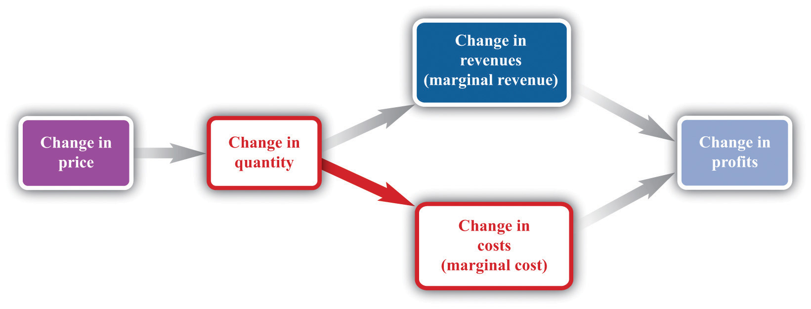
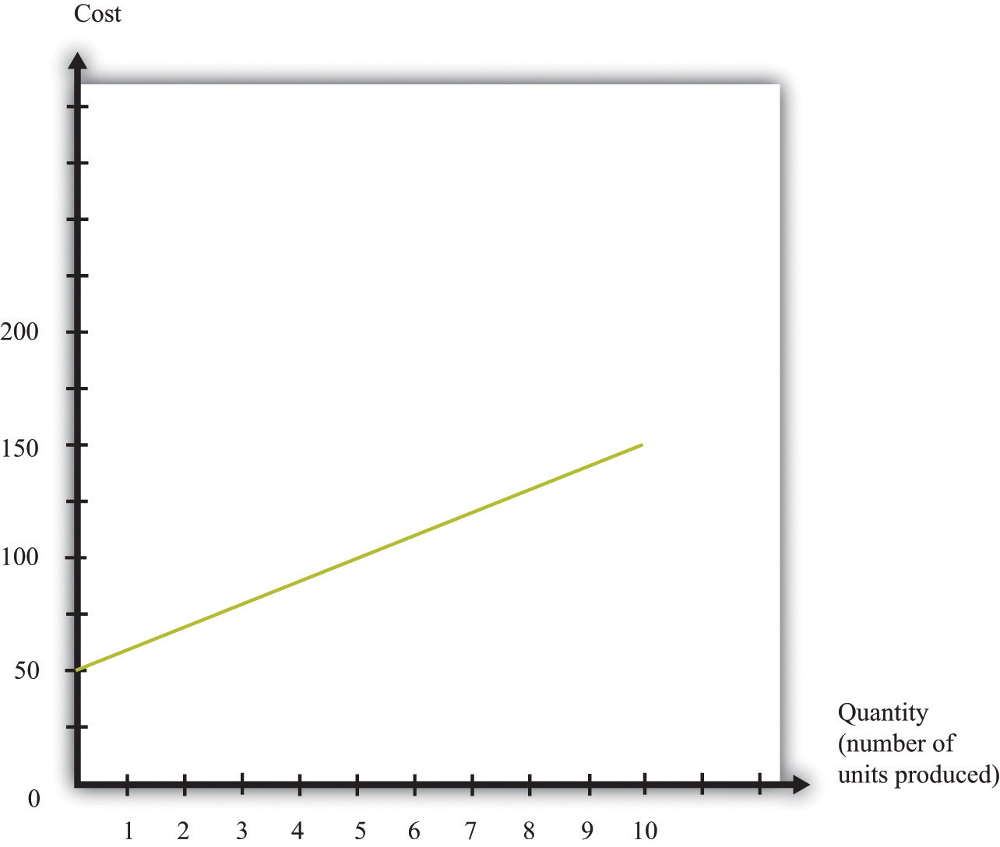

The goods and services that firms put up for sale don’t appear from nowhere. Firms produce these goods and incur costs as a result. When a marketing manager is thinking about the price that she sets, she must take into account that different prices lead to different levels of production and hence to different costs for the firm.
Your typical image of a firm probably involves a manufacturing process. This could be very simple indeed. For example, there are firms in Malaysia that produce palm oil. A firm in this context is little more than a big piece of machinery in the middle of a jungle of palm trees. The production process is hot, noisy, and very straightforward: (1) laborers harvest palm nuts from the trees surrounding the factory; (2) these palm nuts are crushed, heated, and pressed to extract the oil; and (3) the oil is placed into barrels and then sold. If you wanted to run a palm oil production business in Malaysia, you would need to purchase the following:
That’s it. It is not difficult to become a palm oil entrepreneur! In this case, it is quite easy to list the main costs of production for the firm.
In other businesses, however, it is much more difficult. Imagine trying to make a similar list for Apple Computer, with all its different products, production plants in different countries, canteens for their workers, pension plans, and so on. Of course, Apple’s accountants still need to develop a list of Apple’s expenses, but they keep their jobs manageable by grouping Apple’s expenditures into various categories. If this were an accounting textbook, we would discuss these categories in detail. Our task here is simpler: we only need to determine how these costs matter for pricing decisions.
Earlier, we showed how a firm’s revenues change when there is a change in quantity that the firm produces. If we also know how a firm’s costs change when there is a change in output, we have all the information we need for good pricing decisions. As with revenues, we scale this change by the size of the change in quantity. Figure 7.14 "Marginal Cost" shows how marginal costThe extra cost of producing an additional unit of output, which is equal to the change in cost divided by the change in quantity. fits into our road map for the chapter.
Toolkit: Section 31.14 "Costs of Production"
Marginal cost is the change in cost associated with a change in quantity of output produced:
Figure 7.14 Marginal Cost
When a firm sets a higher price, it sells a smaller quantity and its costs of production decrease.
Table 7.4 Marginal Cost
| Output | Total Costs | Marginal Cost ($) |
|---|---|---|
| 0 | 50 | |
| 10 | ||
| 1 | 60 | |
| 10 | ||
| 2 | 70 | |
| 10 | ||
| 3 | 80 | |
| 10 | ||
| 4 | 90 | |
| 10 | ||
| 5 | 100 | |
| … |
Table 7.4 "Marginal Cost" shows an example of a firm’s costs. It calculates marginal cost in the last column. We have presented this table with marginal cost on separate rows to emphasize that marginal cost is the cost of going from one level of output to the next. In our example, marginal cost—the cost of producing one more unit—is $10. If you want to produce one unit, it will cost you $60. If you want to produce two units, your must pay an additional $10 in costs, for a total of $70. If you want to produce three units, you must pay the $70 to produce the first two units, plus the additional marginal cost of $10, for a total cost of $80, and so on. Graphically, marginal cost is the slope of the cost line, as shown in Figure 7.15 "An Example of a Cost Function".
Figure 7.15 An Example of a Cost Function
This graph illustrates the cost function for a firm. In this case, the cost function has the equation cost = 50 + 10 × quantity. The cost of producing each additional unit (the marginal cost) is $10.
To emphasize again, only those costs that change matter for a firm’s pricing decision. When a firm considers producing extra output, many of its costs do not change. We can completely ignore these costs when thinking about optimal pricing. This is not to say that other costs don’t matter; quite the contrary. They are critical for a different decision—whether the firm should be in business at all.See Chapter 9 "Growing Jobs". But as long as we are interested in pricing, we can ignore them.
The costs for developing pharmaceutical products are typically quite high. The drug that Ellie was responsible for was first developed in research laboratories, then tested on animals, and then run through a number of clinical studies on human patients. These studies were needed before the Food and Drug Administration in the United States, and equivalent drug safety organizations in other countries, would approve the drug for sale. But these development costs have no effect on marginal cost because they were all incurred before a single pill could be sold.
Surprisingly, this means that even though the drug was very expensive to develop, Ellie’s team—quite correctly—paid no attention to that fact. In determining what price to set, they looked at the price sensitivity of their customers and at marginal cost. They understood that the development costs of the drug were not relevant to the pricing decision. In fact, Ellie’s team had only a very vague idea how much the drug had cost to develop: after all, that development had been carried out by a completely different arm of the company in other parts of the world.
You will often hear the opposite argument. It is common for people to say that pharmaceutical companies charge high prices because it costs so much to develop their drugs. This argument is superficially appealing, but it is completely backward. Pharmaceutical companies don’t charge high prices because they incur large development costs. They are willing to incur large development costs because they can charge high prices.
Estimating marginal cost is generally much easier than estimating demand because the cost side of the business is largely under the control of the firm. The firm’s costs depend on its technology and the decisions made about using that technology. In most medium- or large-sized firms, there is an “operations department” that takes care of the production process. The marketing manager ought to be able to consult with her colleagues in operations and learn about the costs of the firm. Most importantly, even if it is unreasonable to expect an operations manager to know the firm’s entire cost function, the operations manager should have a good idea about marginal cost (that is, should know how much it would cost per unit to scale up operations by a small amount). And that is the information the marketing manager needs for her pricing decisions.